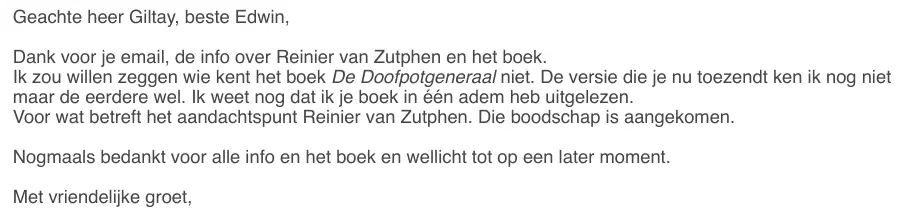

Bewijsstuk · E-mail
Europarlementariër Ton Diepeveen aan Giltay, 10 december 2024
Het citaat op de website gebruikt de bewoording die de auteur op 25 mei 2025 aan Ton Diepeveen voorlegde en die Diepeveen goedkeurde. Die staat hieronder eerst; daarna het oorspronkelijke bericht van 10 december 2024 waarop ze teruggaat.
De bewoording die hij goedkeurde, 25 mei 2025
“Ik zou graag je woorden als quote opnemen in de recensiesectie van mijn website dedoofpotgeneraal.nl, onder citaatrecht, om de internationale dimensie van de beschreven affaire te weerspiegelen. Het gaat om: ‘Wie kent De doofpotgeneraal niet? Ik heb het in één adem uitgelezen.’ – Ton Diepeveen, LLM, Europarlementariër” Pagina 1, het verzoek van de auteur van 25 mei 2025, 00:27. Diepeveen antwoordde dezelfde ochtend om 07:25, bovenaan de wisseling: ‘Geen probleem Edwin’. De voorgestelde bewoording staat in de e-mail tussen dubbele aanhalingstekens; ze staan hier als enkele binnen het citaat. Het citaat en de naamregel staan in de e-mail onder ‘Het gaat om:’ op eigen, ingesprongen regels; hierboven zijn die regels aaneengeschreven.
Zijn oorspronkelijke bericht, 10 december 2024
“Ik zou willen zeggen wie kent het boek De Doofpotgeneraal niet. De versie die je nu toezendt ken ik nog niet maar de eerdere wel. Ik weet nog dat ik je boek in één adem heb uitgelezen.” Pagina 1, het bericht van 10 december 2024, aangehaald onderaan de wisseling. De e-mail schrijft de titel als ‘De Doofpotgeneraal’, cursief en met een hoofdletter D in het tweede deel, waar het boek zelf De doofpotgeneraal heet. De eerste zin eindigt zonder vraagteken. De drie zinnen staan op twee regels, met een regelovergang in de tweede zin na ‘ken ik nog niet’; hierboven zijn die regels aaneengeschreven.

Waarom dit document telt
Het citaat in de stemmensectie komt uit deze e-mailwisseling. Op 10 december 2024 schreef Giltay aan Ton Diepeveen, meester in de rechten en Nederlands lid van het Europees Parlement, over Reinier van Zutphen, Nationale ombudsman en kandidaat voor het ambt van Europees ombudsman. Giltay stuurde de pdf van de Nederlandse editie van het boek mee. Het antwoord kwam dezelfde middag. Diepeveen schrijft dat hij zou willen zeggen dat iedereen het boek kent, dat hij de nu toegezonden versie nog niet kent maar de eerdere wel, en dat hij zich nog herinnert het boek in één adem te hebben uitgelezen.
Op 25 mei 2025 legde Giltay hem de ingekorte bewoording voor die nu in de stemmensectie staat, en vroeg hij of hij die met naam en functie op deze website mocht gebruiken. Diepeveen antwoordde dezelfde ochtend dat dat geen probleem was. Het citaat in de stemmensectie staat er dus met zijn toestemming.
Herkomst
- Document
- Print van een Gmail-bericht, twee pagina’s: Diepeveens antwoord van 25 mei 2025 met de eerdere wisseling eronder
- Van
- Ton Diepeveen (LLM), lid van het Europees Parlement, Partij voor de Vrijheid (NL), commissies PECH, AGRI en JURI
- Aan
- Edwin Giltay
- Datum
- 10 december 2024, 13:16 uur, het bericht waaruit het citaat komt
- Onderwerp
- Re: Kanttekeningen bij Nederlandse kandidaat voor Europees ombudsman
- Wisseling
- Giltay aan Diepeveen, 10 december 2024, 12:07 uur · Diepeveens antwoord dezelfde dag, 13:16 uur · Giltays verzoek hem te mogen citeren, 25 mei 2025, 00:27 uur · Diepeveens antwoord, 25 mei 2025, 07:25 uur
- Toestemming
- Giltay legde op 25 mei 2025 het voorgestelde citaat met naamsvermelding voor en vroeg Diepeveen het te laten weten als hij bezwaar had; het antwoord die ochtend was ‘Geen probleem Edwin’
- Bijlage
- Het boek De doofpotgeneraal, meegezonden met het bericht van 10 december 2024
- Ondertekening
- Logo van het Europees Parlement, naam, functie, partij en commissies, met de kantooradressen in Brussel en Straatsburg; het doorkiesnummer is in deze kopie zwartgelakt
- Taal
- Nederlands
- Pagina’s
- 2
- Berust bij
- Archief van de auteur
Aangehaald in: de stemmensectie.
Bewijsstukpagina: https://
Document: https://
Laatst gewijzigd 26 juli 2026, geraadpleegd 3 oktober 2026.

Deze pagina is een bewijsstuk bij het boek De doofpotgeneraal van Edwin Giltay en de bijbehorende website.